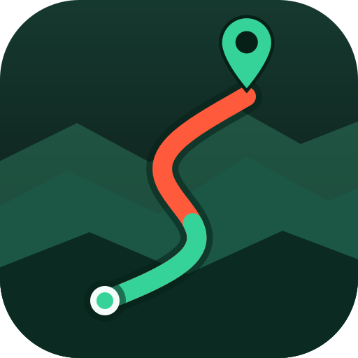

GoWalkWalk
Bring your own route. Get the facilities on it.
Your routes
What you get
- Facilities along the way — AEDs, toilets, drinking water, drink vending machines, shelters and car parks, from OpenStreetMap, each one measured as a walk along your route rather than as the crow flies.
- Landmarks and attractions — the named viewpoints, summits, waterfalls, monuments and huts your route passes, turned into checkpoints. Pins in your own file are kept as checkpoints too.
- Live progress — how far you have walked, how far is left, pace and a finish estimate, held across a reload.
- Weather and air quality — the forecast for where the route actually is, with a lightning, heat and haze warning.
- Offline — save the map along the route before you set off, and the whole app works with no signal.
- Emergency card — one tap for who to call, where you are in a form you can read out, and the nearest AED, water, toilet and shelter.